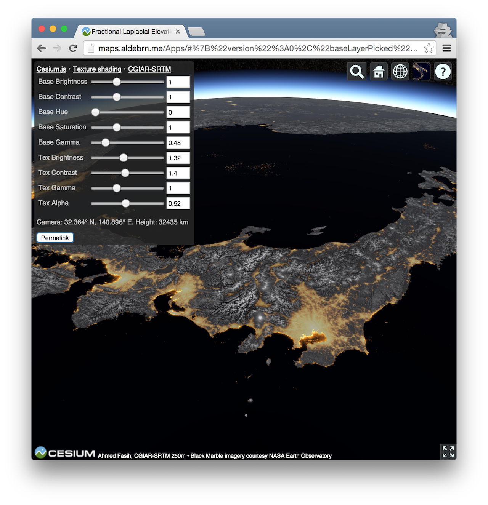

Cesium.js Showcase
Ahmed Fasih (@fasihsignal)
Welcome to my Cesium.js cartographic showcase. Please visit one of the following applications.

Texture-shaded terrain visualization (tutorial)
The tutorial will help you get started if you’ve never used Cesium before.